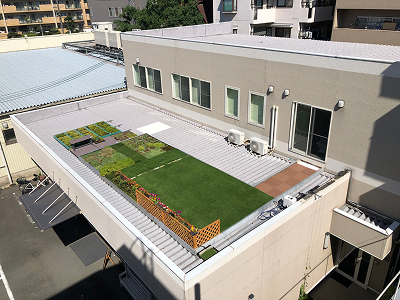
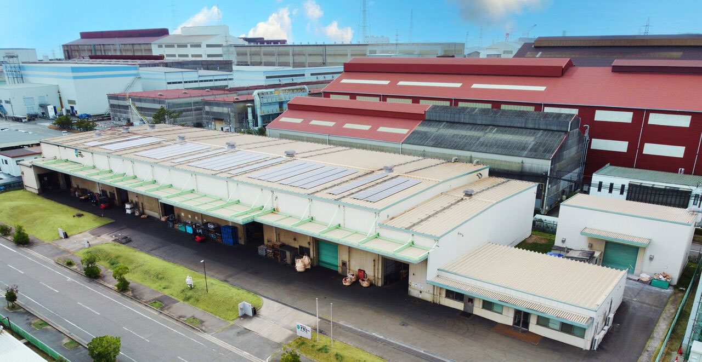
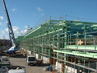
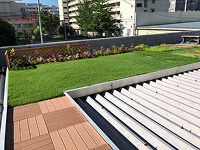
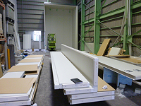
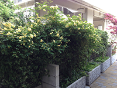
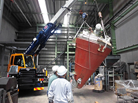
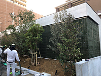
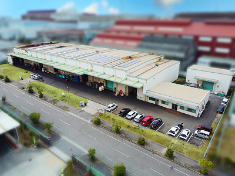

株式会社ナカコー 本社
〒658-0015
兵庫県神戸市東灘区本山南町6-1-6
- callTEL
- 078-411-6061
- faxFAX
- 078-411-6068


私たちナカコーは、80年以上に渡り最高の品質、最適な
納期、最適なコストパフォーマンスを追い求めてきました。
粉体技術は、身近な製品から先端素材開発まで、あらゆる産業界の基幹技術として、その重要度は増すばかりです。
ナカコーは、粉体に関するあらゆるニーズに対して、蓄積した経験・ノウハウ、そして最適な設備・技術による粉体受託加工をご提供させていただきます。






製鋼副資材は鉄の品質安定、歩留まり向上等の高炉メーカー様には欠かせない資材を製造販売しております。
安定した品質・コストに取り組み、またお客様の新たなニーズに対応すべく幅広いネットワークを持ちながら日々努力をしております。
地球温暖化防止、ヒートアイランド対策...
潤いある生活環境の創出と次世代への地球環境保全は私たちの使命と捉え、新技術や循環型商品を積極的にご提案いたします。
〒658-0015
兵庫県神戸市東灘区本山南町6-1-6

〒676-0008
兵庫県高砂市荒井町新浜2-17-10
